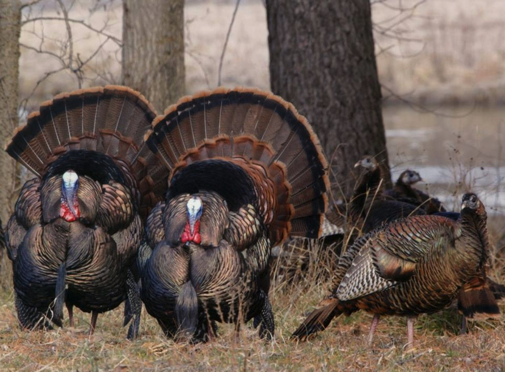

The Big Game Bird: Subspecies
The Osceola Wild Turkey
Meleagris gallopavo osceola
The Osceola wild turkey, also known as the Florida wild turkey, is found exclusively in Florida, particularly in the central and southern regions. It is smaller than the Eastern wild turkey and has darker, more iridescent plumage with longer legs. This subspecies prefers swamps, pine flatwoods, and palmetto prairies, where it can blend into its surroundings.
The Eastern Wild Turkey
Meleagris gallopavo silvestris
The Eastern wild turkey is the most widespread subspecies, found throughout the eastern United States and parts of Canada. It has dark plumage with rich copper and bronze tones, making it one of the most visually striking. This subspecies thrives in hardwood forests, mixed woodlands, and swamps, where it benefits from abundant food and cover.